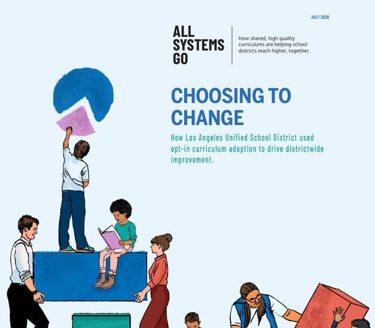
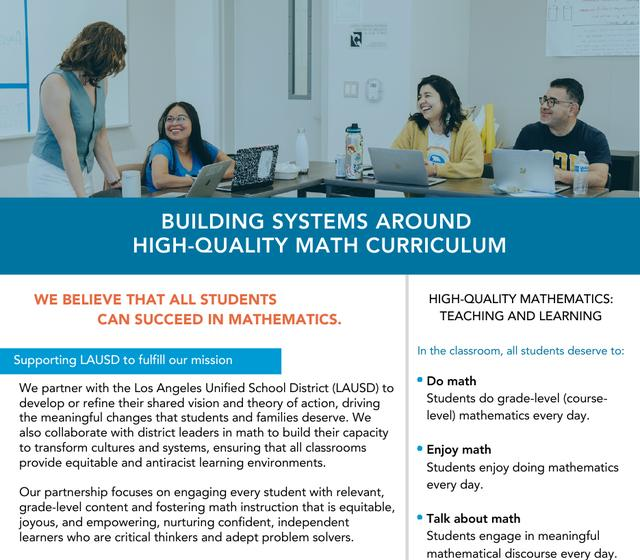
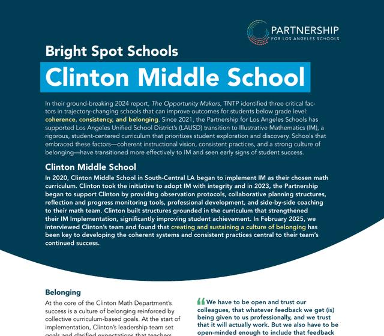
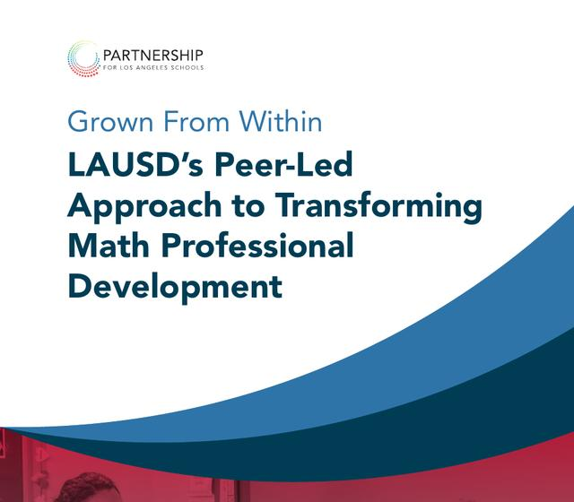
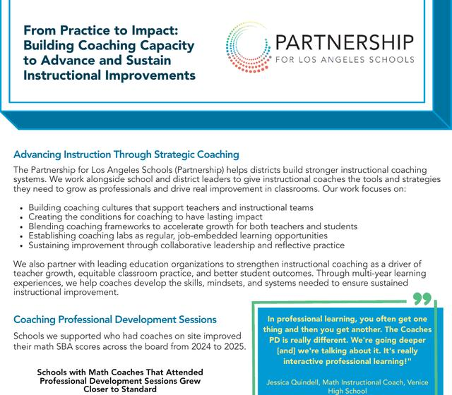

Publications
6 resources · tap any card to open-

Case studyChoosing to Change
How LAUSD used opt-in adoption of Illustrative Mathematics, with partner support, to bring nearly every middle school onto a shared math curriculum.
Read the case study -

One-pagerAll Students Can Succeed in Mathematics
Who we are and how we partner with LAUSD leaders to build a shared vision for equitable, joyful, grade-level math instruction.
View the one-pager -
Checklist
Enabling Conditions for Curriculum Implementation
A self-assessment drawn from five years of HQIM implementation in LAUSD, with reflection questions to inventory your current structures and systems.
Open the checklist -

Bright spotBright Spot Schools: Clinton Middle School
How coherence, consistency, and a strong culture of belonging helped a South-Central LA middle school thrive with Illustrative Mathematics.
Read the profile -

ReportGrown From Within
LAUSD's peer-led approach to transforming math professional development, addressing both the head and the heart.
Read the report -

One-pagerBuilding Coaching Capacity
How strategic instructional coaching systems advance and sustain improvements for teachers and students.
View the one-pager